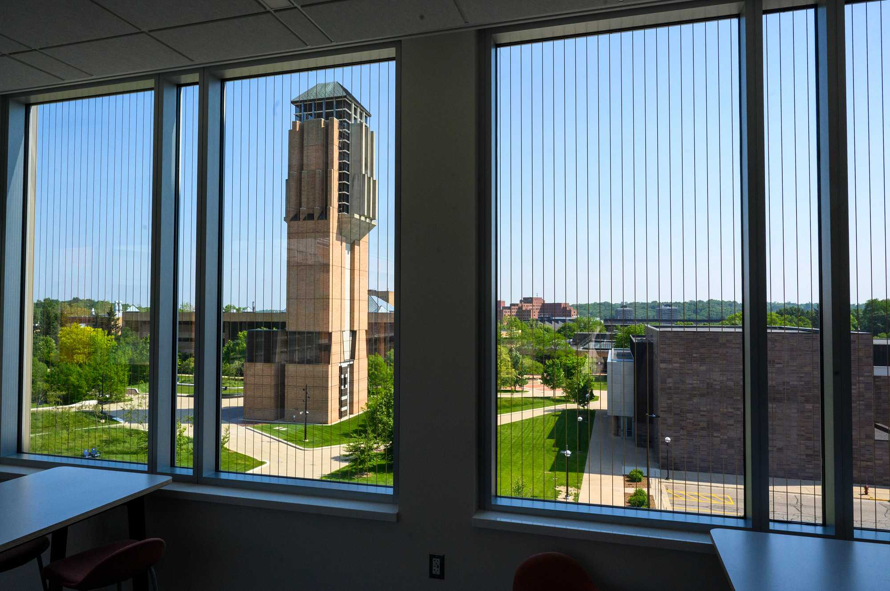
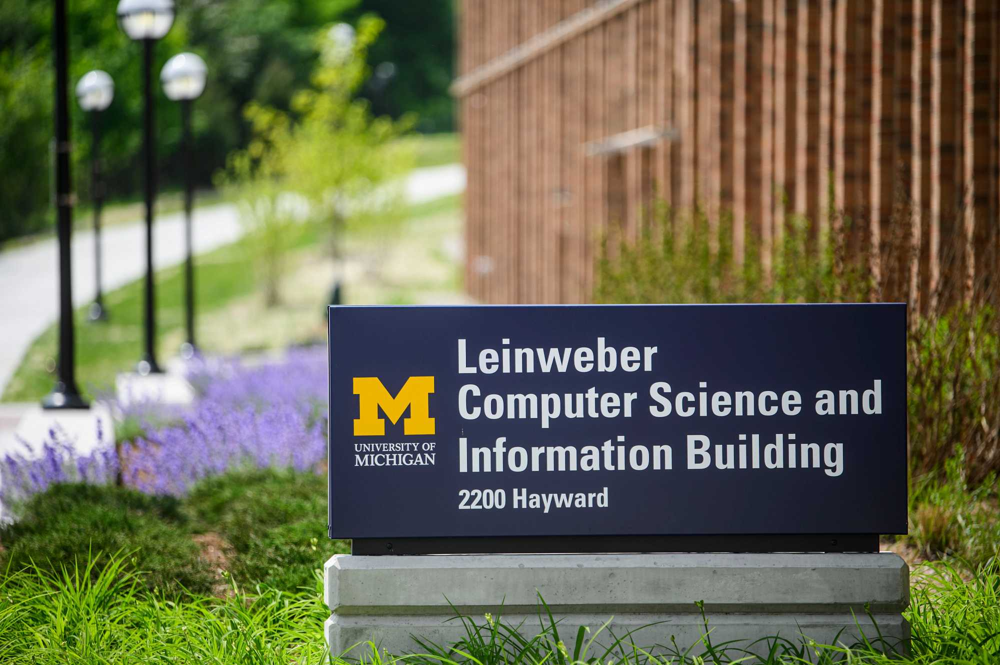

Completing, Reflecting, and Translating Your Impact
Close your project responsibly, evaluate your outcomes, and articulate your real-world experience for your future career.
The Power of Closing Well and Reflecting Deeply
A project is not complete simply because the final deliverable has been handed over. A thoughtful closeout helps your partner continue using the work and gives your team an opportunity to understand what you accomplished together.
Reflection connects experience to learning. Take time to examine your technical skills, teamwork, and the impact of your decisions. Then use specific examples to explain your growth in resumes, portfolio case studies, and interviews.

Close Your Project Responsibly
A useful handoff gives your partner both the final materials and the knowledge needed to use them. Plan the transition together, review the original commitments, and make any remaining limitations clear.
Closeout Goals
Complete and transition the work: Package code, design files, reports, and other assets in accessible formats your partner can use.
Conclude the partnership clearly: Express appreciation, confirm the end of the project, and agree on any remaining responsibilities.
Evaluate the outcomes: Compare the final work with the original project goals and gather feedback from your partner.
Recommended Handoff Process
Review the agreed scope: Identify what is complete, what changed during the project, and what remains unfinished.
Organize the deliverables: Provide clearly named files, instructions, and a summary of where the partner can find each asset.
Explain how to use the work: Walk through the deliverables, demonstrate important features, and document maintenance needs or known limitations.
Confirm access and ownership: Check that the partner can open and use the materials, and clarify who will maintain them after your team leaves.
Hold a closing conversation: Gather feedback, confirm any final tasks, and agree on realistic boundaries for future contact.
Review your learning goals, project notes, partner feedback, and final deliverables. Identify what the evidence shows about your contribution and where the long-term outcomes are still unknown.
Questions to Consider
What did I learn about my technical skills and areas for further development?
How did my communication and teamwork affect the project?
Which assumptions changed after listening to users or the partner?
What ethical questions arose, and how did we respond?
How did the final work address the partner's priorities?
What would I do differently in a future engaged learning experience?
Describe Impact with Evidence
Connect your claims to documented outcomes, partner feedback, or changes observed during the project. Distinguish a completed deliverable from its longer-term effect, and acknowledge contributions from your teammates and partner.

Turn Your Experience into Career Evidence
Your project can demonstrate how you solve problems, collaborate with others, and work within real constraints. Explain both what you produced and how you made decisions along the way.
Articulate Your Skills
For a resume, describe your specific contribution, the methods or tools you used, and the outcome supported by your evidence. Include accurate measurements when available, and avoid claiming results you have not verified.
To prepare for interviews, organize an example using the STAR method: describe the Situation, explain your Task, identify the Actions you took, and discuss the Result and what you learned.
Build a Portfolio Case Study
Introduce the context: Explain the project need, intended users, and relevant constraints.
Clarify your role: Distinguish your responsibilities from the team's shared work.
Show the process: Include research methods, important decisions, iterations, and examples of how feedback shaped the work.
Present the outcome: Share appropriate artifacts and explain what they accomplished, including any limitations.
Reflect on your growth: Identify lessons you will apply to future projects.
Before publishing, confirm what your partner permits you to share. Use approved materials and remove confidential or identifying information as needed.
Maintain Professional Connections
Thank your partner, mentors, and teammates for their contributions. Ask whether they would welcome future updates, and respect the communication preferences established during closeout. When sharing project milestones publicly, acknowledge collaborators and follow the partner's preferences for attribution.
STAR Method Project Reflection Sheet: The ELO content lists this tool for preparing interview stories about teamwork, conflict, and technical problem-solving. It links to University Career Center Interviewing Resources.